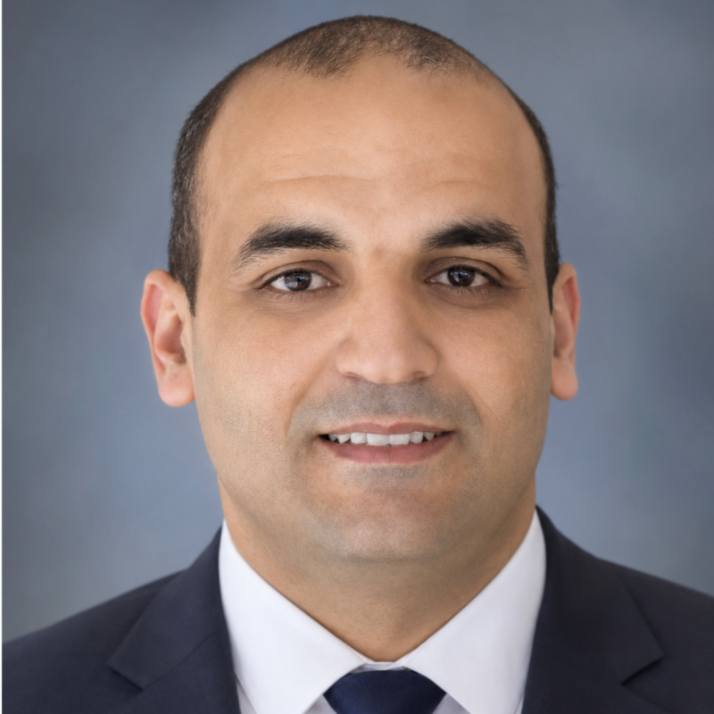

AI for food safety
& food fraud
Early-warning systems, vulnerability assessment, anomaly detection and supply-chain integrity using machine learning, Bayesian networks and graph approaches.
Risk modellingExplainable AITraceability
↗WAGENINGEN UNIVERSITY & RESEARCH / THE NETHERLANDS
ASSOCIATE PROFESSOR · ARTIFICIAL INTELLIGENCE
I develop AI and data-driven systems that help safeguard food, strengthen supply chains and support better health decisions.

RESEARCH AT THE INTERSECTION OF
WHO I AM
I am an Associate Professor in Artificial Intelligence for Food and Health at Wageningen University & Research, within the Information Technology group.
My work brings together artificial intelligence, machine learning and systems thinking to address complex challenges across food safety, food quality, public health and sustainable food systems. I develop intelligent models for risk assessment, food fraud detection, disease prediction and decision-making across the food chain.
Working with international research partners, I aim to turn advanced data methods into practical tools that help create safer, healthier and more resilient systems.
AREAS OF EXPLORATION
I work across disciplines to build intelligent, explainable and actionable solutions for the food and health domains.
Early-warning systems, vulnerability assessment, anomaly detection and supply-chain integrity using machine learning, Bayesian networks and graph approaches.
LLMs, retrieval-augmented generation and human-in-the-loop systems for regulatory intelligence, scientific discovery and trustworthy decision support.
Deep learning and multimodal sensing that combine smartphone, hyperspectral, drone and satellite data for food origin and quality verification.
Predictive digital twins and system-of-systems approaches for agri-food production, livestock management and resilient supply chains.
Machine learning and clinical decision-support models for personalized nutrition, glycemic control and health-related risk guidance.
THE BIGGER PICTURE
Food systems are interconnected. So are the challenges they face. My research uses AI to connect evidence, anticipate risks and support decisions where food, health and sustainability meet.
↗RESEARCH IN ACTION
Selected projects and research directions from my public Wageningen research profile.
PHD RESEARCH · PRECISION HEALTH
Research exploring multimodal AI approaches to support precision health and diabetes care.
PHD RESEARCH · FOOD & HEALTH
Interdisciplinary research connecting intelligent systems with food and plant-extract research.
FOOD SAFETY DATA & DIGITAL INFRASTRUCTURE
Project leadership in a programme focused on food-safety data, digital infrastructure and market-oriented innovation.
PHD RESEARCH · RISK MODELLING
Research on designing cost-effective monitoring schemes for chemical hazards using machine learning.
SELECTED RESEARCH OUTPUT
A selection of recent work. For the complete and continuously updated record, visit the Wageningen research portal.
Comprehensive Reviews in Food Science and Food Safety · Peer-reviewed article
Computers and Electronics in Agriculture · Peer-reviewed article
Foods · Peer-reviewed article
Seafood 4.0: Digital, Physical, and Biological Innovations from Sea to Table · Book chapter
Journal of Agriculture and Food Research · Peer-reviewed article
EDUCATION & SUPERVISION
I design and coordinate learning experiences that connect artificial intelligence and data science with real-world challenges in food and health.
I supervise BSc, MSc and PhD research in AI, data science and information technology. University Teaching Qualifications (UTQ / BKO): WUR (2023) and France (2012).
LET'S CREATE IMPACT TOGETHER
Interested in research collaboration, student supervision, speaking or exchanging ideas at the intersection of AI, food and health? I would be glad to connect.
Contact via Wageningen University ↗